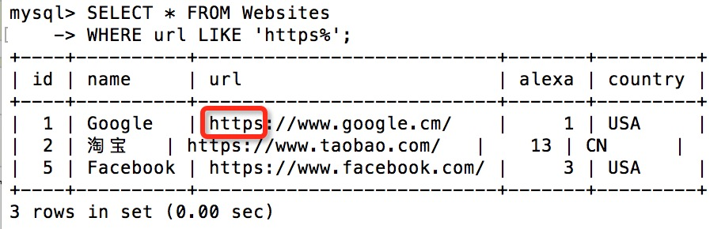
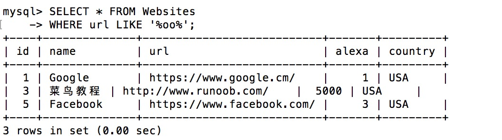
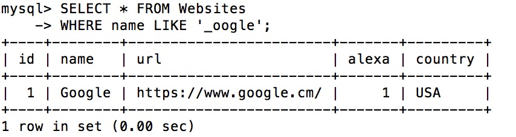
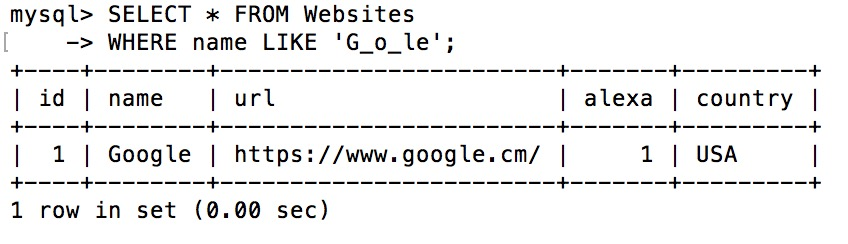
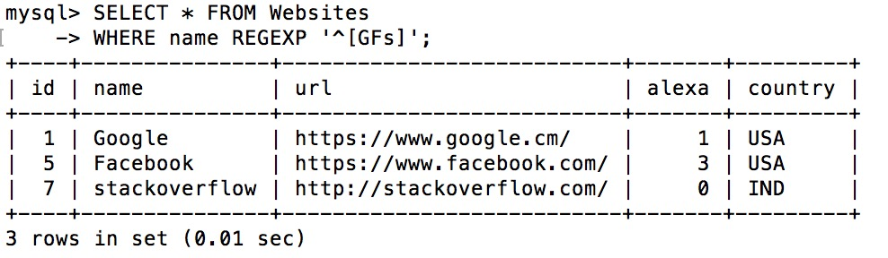
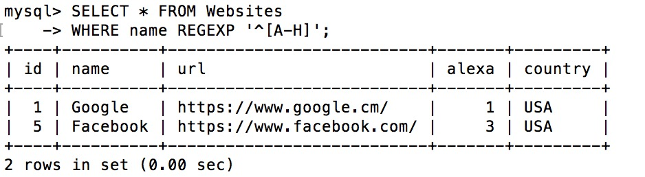
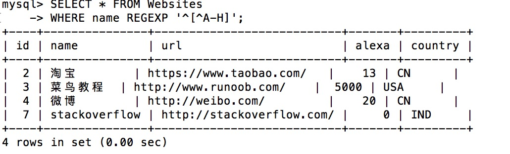
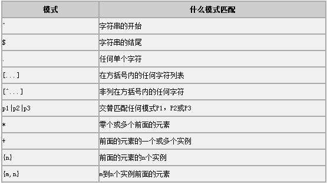

SQL ワイルドカード
ワイルドカードは、文字列内の他の任意の文字を置き換えるために使用できます。
SQL ワイルドカード
SQL では、ワイルドカードは SQL LIKE 演算子と一緒に使用します。
SQL ワイルドカードは、テーブル内のデータを検索するために使用されます。
SQL では、次のワイルドカードを使用できます：
| ワイルドカード | 説明 |
|---|---|
| % | 0 個以上の文字を置き換える |
| _ | 1 つの文字を置き換える |
| [charlist] | 文字リスト内の任意の 1 文字 |
| [^charlist] 或 [!charlist] |
文字リスト内にない任意の 1 文字 |
デモデータベース
このチュートリアルでは、RUNOOB サンプルデータベースを使用します。
以下は "Websites" テーブルから選んだデータです。
mysql> SELECT * FROM Websites; +----+---------------+---------------------------+-------+---------+ | id | name | url | alexa | country | +----+---------------+---------------------------+-------+---------+ | 1 | Google | https://www.google.cm/ | 1 | USA | | 2 | 淘宝 | https://www.taobao.com/ | 13 | CN | | 3 | 菜鸟教程 | http://www.runoob.com/ | 5000 | USA | | 4 | 微博 | http://weibo.com/ | 20 | CN | | 5 | Facebook | https://www.facebook.com/ | 3 | USA | | 7 | stackoverflow | http://stackoverflow.com/ | 0 | IND | +----+---------------+---------------------------+-------+---------+
SQL % ワイルドカードの使用
次の SQL 文は、url が文字 "https" で始まるすべての Web サイトを選択します。
例
WHERE url LIKE 'https%';
実行出力結果：

次の SQL 文は、url にパターン "oo" を含むすべての Web サイトを選択します。
例
WHERE url LIKE '%oo%';
実行出力結果：

SQL _ ワイルドカードの使用
次の SQL 文は、name が任意の 1 文字で始まり、その後に "oogle" が続くすべての顧客を選択します。
例
WHERE name LIKE '_oogle';
実行出力結果：

次の SQL 文は、name が "G" で始まり、任意の 1 文字、次に "o"、任意の 1 文字、次に "le" が続くすべての Web サイトを選択します。
例
WHERE name LIKE 'G_o_le';
実行出力結果：

SQL [charlist] ワイルドカードの使用
SQL では、[charlist] ワイルドカードは文字のリストを指定し、そのリスト内の任意の 1 文字を照合するために使用されます。
これは通常、WHERE 句などでパターンマッチングのために LIKE 演算子と一緒に使用されます。
次の SQL 文は、name が "G"、"F"、または "s" で始まるすべての Web サイトを選択します。
例
WHERE name REGEXP '^[GFs]';
実行出力結果：

次の SQL 文は、name が A から H の文字で始まる Web サイトを選択します。
例
WHERE name REGEXP '^[A-H]';
実行出力結果：

次の SQL 文は、name が A から H の文字で始まらない Web サイトを選択します。
例
WHERE name REGEXP '^[^A-H]';
実行出力結果：

番茄土豆
799***193@qq.com
参考URL
まず、LIKE コマンドで使用されるワイルドカードについて説明します。
% は 1 つ以上の文字を置き換える
_ は 1 つの文字のみを置き換える
[charlist] 文字リスト内の任意の 1 文字
[^charlist] または [!charlist] 文字リスト内にない任意の 1 文字
上記のワイルドカードを組み合わせることで、LIKE コマンドでさまざまなテクニックを実現できます。
1、LIKE'Mc%' は、文字 Mc で始まるすべての文字列を検索します（例：McBadden）。
2、LIKE'%inger' は、文字 inger で終わるすべての文字列を検索します（例：Ringer、Stringer）。
3、LIKE'%en%' は、任意の位置に文字 en を含むすべての文字列を検索します（例：Bennet、Green、McBadden）。
4、LIKE'_heryl' は、文字 heryl で終わるすべての 6 文字の名前を検索します（例：Cheryl、Sheryl）。
5、LIKE'[CK]ars[eo]n' は、次の文字列を検索します：Carsen、Karsen、Carson、Karson（例：Carson）。
6、LIKE'[M-Z]inger' は、文字列 inger で終わり、M から Z までの任意の 1 文字で始まるすべての名前を検索します（例：Ringer）。
7、LIKE'M[^c]%' は、文字 M で始まり、2 番目の文字が c ではないすべての名前を検索します（例：MacFeather）。
番茄土豆
799***193@qq.com
参考URL
白菜
min***eyiyi@gmail.ccom
SQL では、ワイルドカードは SQL LIKE 演算子と一緒に使用します。
ただし、MySQL、SQLite はサポートするのは% 和 _ワイルドカードのみで、サポートしていません[^charlist] 或 [!charlist]ワイルドカード（MS Access はサポートしています。Microsoft Office はワイルドカードを一貫して良好にサポートしていますが、Microsoft は場合によってはワイルドカードをサポートしていません%、ではなく*、対応するソフトウェアの説明を参照してください）。ワイルドカードと正規表現は同じものではありません。
MySQL と SQLite は、like '[xxx]yyy'の角括弧を通常の文字として扱い、ワイルドカードとしては扱いません。
例えば：
検索されるのはcity 为 [B]eijingの行であり、～ではなくcity 为 beijingの行。
MySQL で～を実現するには[^charlist] 或 [!charlist]ワイルドカードの検索効果は、正規表現によって実現する必要があります。
select * from persons WHERE City REGEXP '[b]eijing' SQLite は Regexp 正規表現メソッドをサポートしていません。白菜
min***eyiyi@gmail.ccom
julian
154***05@qq.com
参考URL
SQL:REGEXP
より複雑な例として、正規表現B[an]*s次の文字列のいずれかに一致します：Bananas、Baaaaas、Bs、および B で始まり s で終わり、その中に任意の数の a または n 文字を含むその他の文字列。
以下は、REGEXP 演算子とともに使用できるパターンの表です。
応用例として、ユーザーテーブルで Email 形式が誤っているユーザーレコードを検索します：
SELECT * FROM users WHERE email NOT REGEXP '^[A-Z0-9._%-]+@[A-Z0-9.-]+.[A-Z]{2,4}$'MySQL データベースにおける正規表現の構文は、主に各種記号の意味を含みます。
（^）文字
文字列の先頭位置に一致します。例：^a文字 a で始まる文字列を表します。
xxxyyy 文字列が xx で始まるかどうかをクエリします。結果値は 1 で、値が true であり、条件を満たすことを示します。
（$）文字
文字列の終了位置に一致します。例：X$文字 X で終わる文字列を表します。
（.）文字
この文字は英語のピリオドで、任意の 1 文字に一致します。復帰や改行なども含みます。
（*）文字
アスタリスクは 0 個以上の文字に一致します。その前には内容がなければなりません。例：
この SQL 文では、正規表現の一致は true です。
（+）文字
プラス記号は 1 個以上の文字に一致します。その前にも内容がなければなりません。プラス記号はアスタリスクと似た使い方ですが、アスタリスクは 0 回の出現を許可するのに対し、プラス記号は少なくとも 1 回の出現が必要です。
（?）文字
クエスチョンマークは 0 回または 1 回に一致します。
例:
上記の表に基づいて、要件を満たすさまざまな種類の SQL クエリを構築できます。ここにいくつかの理解を列挙します。person_tbl というテーブルと、名称というフィールドがあるとします。
すべての名前を検索し、その名前がstで始まる：
すべての名前を検索し、その名前がokで終わる
すべての名前を検索し、その名前がmarという文字列を含む：
すべての名前が母音で始まり ok で終わるものを検索：
正規表現では、以下の予約語を使用できます：
^
一致する文字列が後続の文字列で始まる：
$
一致する文字列が先行の文字列で終わる：
.
任意の文字に一致（改行を含む）
a*
任意の数の a に一致（空文字列を含む）
a+
任意の数の a に一致（空文字列を含まない）
a?
1 個または 0 個の a に一致
de|abc
de または abc にマッチします
(abc)*
任意の数の abc にマッチします（空文字列を含む）
{1} 、{2,3}
これはより包括的な方法で、前述のいくつかの予約語の機能を実現できます。
a* は a{0,} と書けます
a+ は a{1,} と書けます
a? は a{0,1} と書けます
{} 内に整数パラメータ i が 1 つだけある場合、文字は i 回だけ出現できることを示します。{} 内に整数パラメータ i があり、その後に,、文字が i 回以上出現できることを示します。{} 内に整数パラメータ i があり、その後に,、続いて整数パラメータ j が続く場合、文字は i 回以上、j 回以下（i 回と j 回を含む）だけ出現できることを示します。整数パラメータは 0 以上、RE_DUP_MAX（デフォルトは 255）以下でなければなりません。2 つのパラメータがある場合、2 番目は 1 番目以上でなければなりません。
[a-dX]
「a」「b」「c」「d」または「X」にマッチします。
[^a-dX]
「a」「b」「c」「d」「X」以外の任意の文字にマッチします。
「[」と「]」はペアで使用する必要があります。
julian
154***05@qq.com
参考URL
春姐
985***322@qq.com
参考URL
SQL:REGEXP
より複雑な例として、正規表現B[an]*s次の文字列のいずれかにマッチします：Bananas，Baaaaas，Bs、およびBで始まり、sで終わり、その中に任意の数の a または n 文字を含む任意の他の文字列。以下は、REGEXP 演算子とともに使用できるパターンの表です。

適用例：ユーザーテーブル内の Email 形式が誤っているユーザーレコードを検索します。
SELECT * FROM users WHERE email NOT REGEXP '^[A-Z0-9._%-]+@[A-Z0-9.-]+.[A-Z]{2,4}$'MySQL データベースにおける正規表現の構文、主にさまざまな記号の意味。
^ 文字
文字列の開始位置にマッチします。例：^a文字 a で始まる文字列を表します。
xxxyyy 文字列が xx で始まるかどうかをクエリします。結果の値は 1 で、値が true、条件を満たすことを示します。
$ 文字
文字列の終了位置にマッチします。例：X$文字 X で終わる文字列を表します。
. 文字
この文字は英語のピリオドで、任意の 1 文字（復帰、改行などを含む）にマッチします。
* 文字
アスタリスクは 0 個以上の文字にマッチします。その前には内容が必要です。例：
この SQL 文では、正規表現マッチングは true です。
+ 文字
プラス記号は 1 個以上の文字にマッチします。その前にも内容が必要です。プラス記号の使い方はアスタリスクと似ていますが、アスタリスクは 0 回の出現を許容し、プラス記号は少なくとも 1 回の出現が必要です。
? 文字
疑問符は 0 回または 1 回にマッチします。
例：
上記の表に基づいて、要件を満たすためにさまざまな種類の SQL クエリを構築できます。ここにいくつかの理解を示します。person_tbl というテーブルと name というフィールドがあるとします。
すべての名前が次の文字列でst始まるものを検索するクエリ：
すべての名前が ok で終わるものを検索するクエリ：
すべての名前が mar を含む文字列を検索するクエリ：
すべての名前が母音で始まり、ok で終わるものを検索するクエリ：正規表現では、以下の予約語を使用できます。
^
マッチする文字列は、後続の文字列で始まります：
$
マッチする文字列は、直前の文字列で終わります：
.
任意の文字（改行を含む）にマッチ：
a*
任意の数の a にマッチ（空文字列を含む）：
a+
任意の数の a にマッチ（空文字列を含まない）：
a?
1 個または 0 個の a にマッチ：
de|abc
de または abc にマッチ：
(abc)*
任意の数の abc にマッチ（空文字列を含む）：
{1}
{2,3}
これはより包括的な方法で、前述のいくつかの予約語の機能を実現できます。
a*と書けますa{0,}。
a+と書けますa{1,}。
a?と書けますa{0,1}。
{} 内に整数パラメータ i が 1 つだけある場合、文字は i 回だけ出現できることを示します。{} 内に整数パラメータ i があり、その後に,、文字が i 回以上出現できることを示します。{} 内に整数パラメータ i があり、その後に,、続いて整数パラメータ j が続く場合、文字は i 回以上、j 回以下（i 回と j 回を含む）だけ出現できることを示します。整数パラメータは 0 以上、RE_DUP_MAX（デフォルトは 255）以下でなければなりません。2 つのパラメータがある場合、2 番目は 1 番目以上でなければなりません。
[a-dX]「a」「b」「c」「d」または「X」にマッチします。
[^a-dX]「a」「b」「c」「d」「X」以外の任意の文字にマッチします。
「[」と「]」はペアで使用する必要があります：
春姐
985***322@qq.com
参考URL